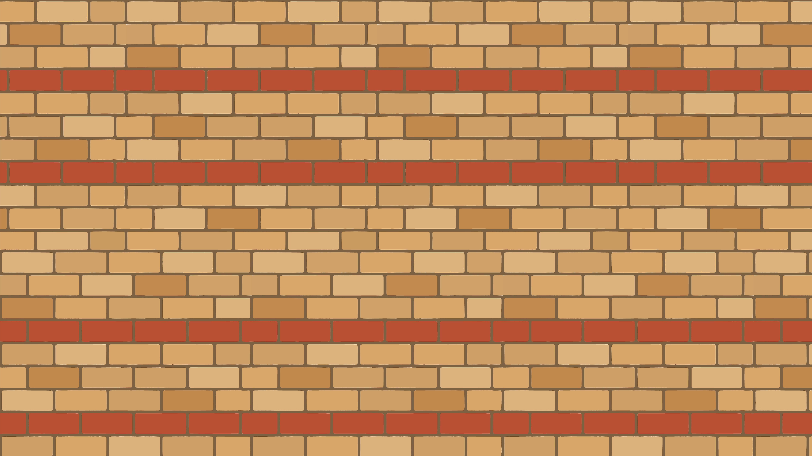
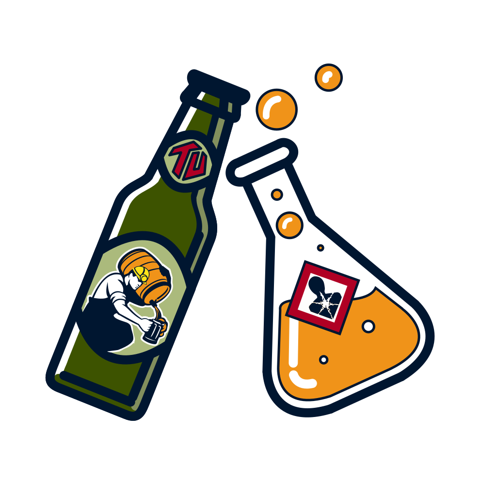

Studierendeninitiative der TU Berlin
BLuB ist die Studierendeninitiative der Studiengänge Biotechnologie, Lebensmitteltechnologie sowie Brauerei- und Getränketechnologie. Wir schaffen Räume, in denen Studierende sich kennenlernen, füreinander eintreten und gemeinsam gestalten. Offen für alle.
Filmabende, Spieleabende, Grillabende, Partys
Studentische Selbstverwaltung
Exekutive der Studierendenschaft mit mind. 10 Referaten. Bietet Beratung (BAföG, Recht, Soziales), organisiert Events und setzt Beschlüsse um.
asta.tu-berlin.de →Studierendenparlament – höchstes Gremium der Studierendenschaft. Wählt den AStA jährlich und beschließt den Haushalt. Alle Studis wählen jedes Jahr.
StuPa TU Berlin →Fachschaftsrat für Biotechnologie, Lebensmitteltechnologie und Brauerei- & Getränketechnologie. Komm zum Plenum – jeden 1. Dienstag im Monat, 18 Uhr, Café Erdreich.
Kontakt aufnehmen →Akademische Selbstverwaltung
Kontrolliert das Präsidium und wählt Kanzler*in. Bildungssenator*in + 6 externe Mitglieder + 4 TU-Mitglieder. St: 1 / AM: 1 / SM: 1 / HL: 1. Externe Mitglieder werden vom AS gewählt.
Leitet die TU strategisch. Präsident*in wird alle 4 Jahre vom eAS gewählt, Vizepräsident*innen alle 2 Jahre. Aktuell: Prof. Dr. Fatma Deniz.
Mehr erfahren →eAS (10 Studi-Sitze): wählt Präsident*in (alle 4J) & Vizepräsident*innen (alle 2J).
AS (4 Studi-Sitze): höchstes Beschlussgremium der TU – entscheidet über Satzungen, Studienordnungen. Wählt auch externe KU-Mitglieder.
Entscheidet über Prüfungsordnungen, Lehrpläne und Personal – direkter Einfluss auf euer Studium! St: 2 / AM: 2 / SM: 2 / HL: 7. Wählt Dekan*in. BLuB → Fak. III.
Entscheidet auf Institutsebene. Regulär: St:1, für Architektur/Chemie/Mathematik: St:2. Wählt geschäftsführende*n Direktor*in. Fak. III hat 6 Institute.
An der TU Berlin gibt es über 20 Studierendeninitiativen mit eigenen Räumen & Cafés. Klicke auf einen Punkt um mehr zu erfahren.
Ob du dich engagieren willst, Fragen zu deinem Studium hast oder einfach nette Leute kennenlernen möchtest, bei uns bist du willkommen.
Café Erdreich offen?Mitmachen?
Schreib uns eine Mail oder komm zum nächsten Plenum. Wir freuen uns auf dich!
Jetzt melden →